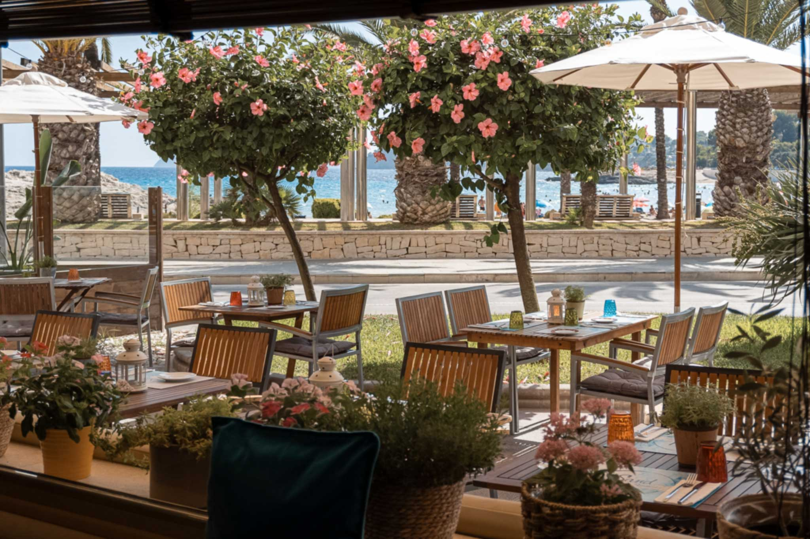
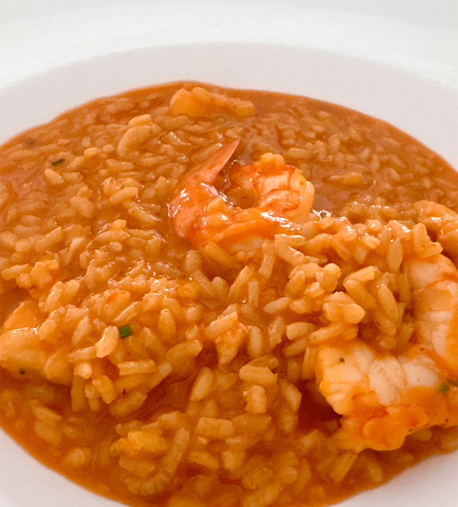

Valoración
4,4 ★★★★1.530 reseñas Google
En primera línea de la Playa de l’Ampolla, Sand es el refugio de quienes buscan arroces de autor, pescado de la lonja de Moraira y horas largas frente al mar. Cocina mediterránea con el ritmo de la costa.


Pescado limpio, fumet propio, punto justo del grano. Servido en sartén individual, como debe ser.
Un lugar fantástico junto al mar. El entorno es precioso, con unas vistas espectaculares y una tranquilidad que invita a quedarse.